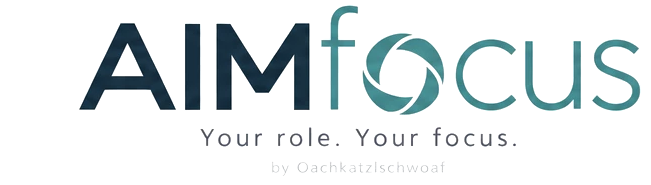

-
Built on FHIR
Easily transferable – deploy at your institution today
-
Built and tested by clinicians
91 of 92 questions right on 31 clinical situations
-
Accurate and traceable
15/15 correct · 100% sourced · 0 invented · 8 contradictions
-
Fast
First response in 1.8 s at worst, 117 ms median
-
Rich information at a glance
Medical image viewer, trend charts, highlighted contradictions, …